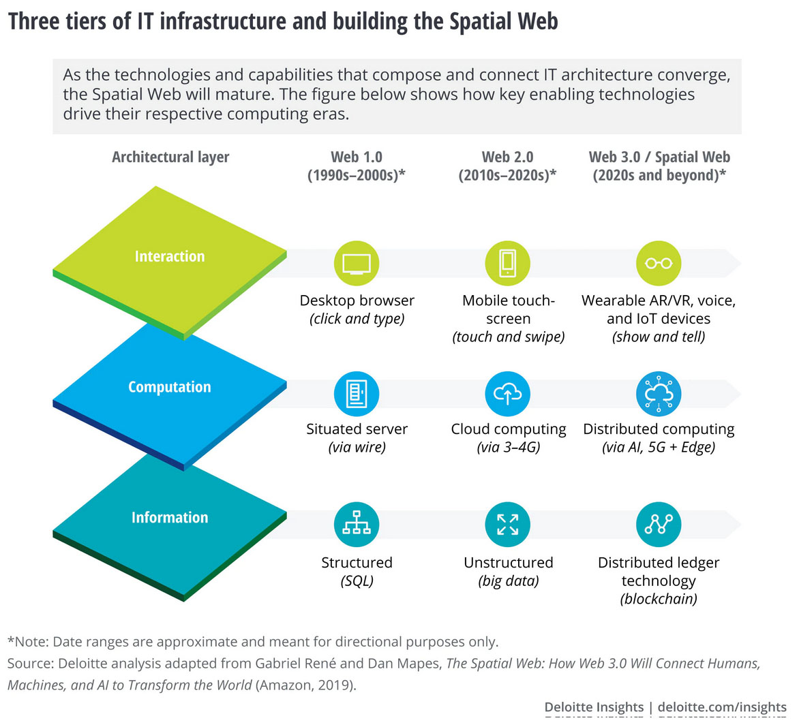
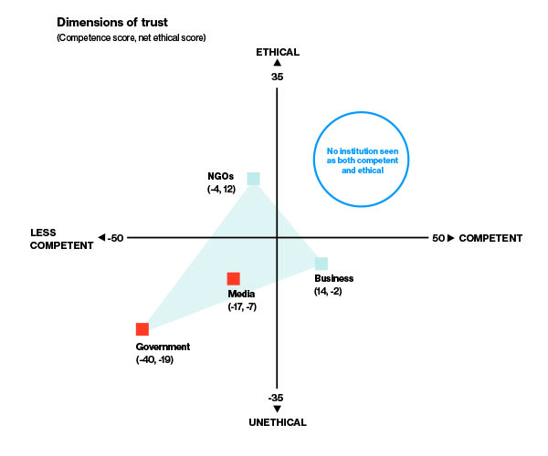
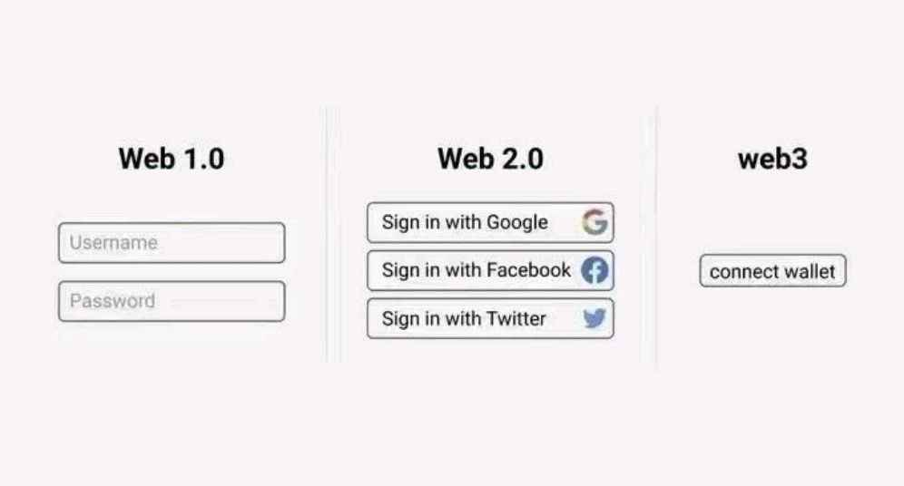
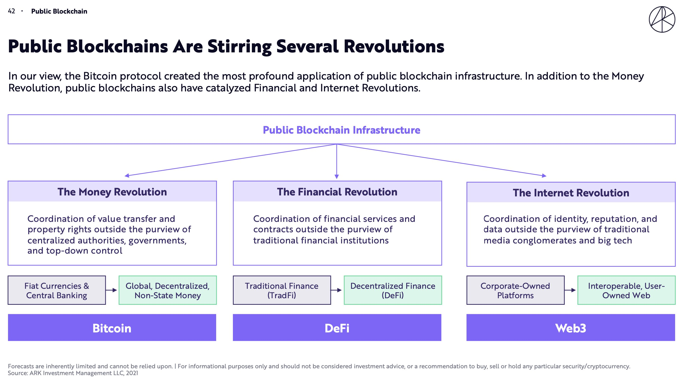
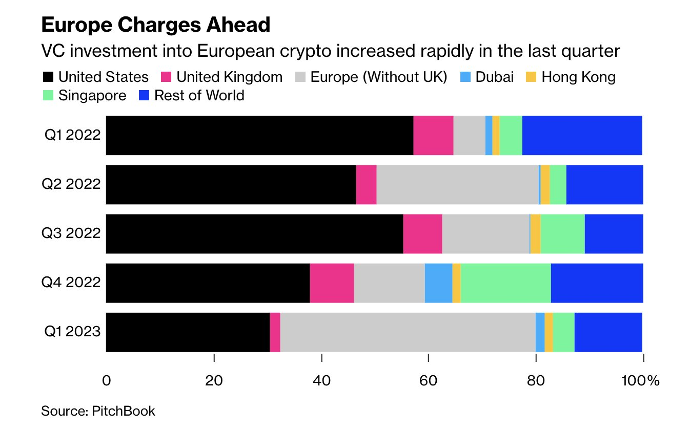

- automatically published
Decentralisation & The Web
Semantic web
- The Semantic Web definition of Web3.0 has been somewhat overhauled by other innovations in decentralised internet technologies, now evolving toward the slightly different Web3 moniker. Tim Berners Lee (of WWW fame) first mentioned the semantic web in 1999 [[2]
- “I have a dream for the Web [in which computers] become capable of analyzing all the data on the Web — the content, links, and transactions between people and computers. A “Semantic Web”, which makes this possible, has yet to emerge, but when it does, the day-to-day mechanisms of trade, bureaucracy and our daily lives will be handled by machines talking to machines. The “intelligent agents” people have touted for ages will finally materialize.” Attention developed around three core themes, ubiquitous availability and searchability of data, intelligent search assistants, and highly available end points such as phones, and ‘internet of things’ devices. This is certainly manifesting in home devices, but few people think of this as a Web3 revolution. Since ratification of the standards by the World Wide Web (W3C) consortium it seems that their imperative toward decentralisation has become lost. Instead, it can be seen that Facebook, Amazon, Google, and Apple have a harmful oligopoly on users data [3]. This is at odds with Berners-Lee’s vision, and he has recently spoken out about this discrepancy, and attempted to refocus the media onto Web3.0.
- It is worth taking a look at his software implementation called Solid, which is far more mindful of the sovereignty of user data.
- Excitement around this kind of differentiated trust model, hinted at in ubiquitous availability of data (and implemented explicitly in Solid), has led to exploration of different paths by cryptographers, and this will be described later. For instance, one of the developers of Solid, Carvelho, is now a leading developer and prepotent of Solid-Lite and Nostr protocol , another very interesting option. This technology space is prolific, but still comparatively young and small.
Spatial web
- “The Spatial Web”, a blurring of the boundaries between digital and geospatial physical objects, seems to have developed from the strands in the original W3C scope around devices in the real world. It has been concentrating around AR and VR but is being marketed and amplified with the same references to availability of data (See Figure 2.1 from a Deloitte accounting report). This too is finding little traction in practice, though obviously the component technologies continue to enjoy rapid development. Nonetheless, this interpretation of Web3 becomes valuable when examining Metaverse and Telecollaboration.

Web3
- More recently Web3 is being touted as a way to connect content creators directly to content consumers, without centralised companies acting as gatekeepers of the data. It implies that all users have a cryptographic key management system, to which they attach metadata, that they make requirements of peers with whom they communicate, and that they maintain trust ‘scores’ with peers.
- It seems likely that this new model is less driven by a market need, and more by the high availability of tools which allow this to happen (the ecosystems described later). Add to this a social response to the collapse in trust of companies such as Facebook and other social media platforms[4] (Figure 2.2). There is perhaps a wish by consumers to pass more of the economic incentive to content creators, without the ‘rent seeking’ layer afforded by businesses, and a healthy dose of mania driven market speculation. Edelman’s latest trust report is shocking, finding that trust in all institutions has slumped recently to all time lows, and their global survey found that: [“Nearly 6 in 10 say their default tendency is to distrust something until they see evidence it is trustworthy. Another 64% say it’s now to a point where people are incapable of having constructive and civil debates about issues they disagree on. When distrust is the default — we lack the ability to debate or collaborate.“]

2.3.1 Emerging consensus
The recent hype cycle ignored the legacy definitions described above and instead focusing almost exclusively on Ethereum based peer-to-peer projects. It can be seen that the description is somewhat in the eye of the beholder. It’s possible to frame this Ethereum Web3 as a hugely complex and inefficient digital rights management system (DRM). DRM is something that users of the internet are increasingly familiar and comfortable with. It’s somewhat debatable whether decentralising this is worthwhile. The thesis of the developers of the technology seems to be that without it, control of ‘value’ will accrete over time, to one or more hegemonic controlling entities. It’s a strong argument, but there is a substantial counter argument emerging that users just don’t want this stuff. The nervousness of legislators in the USA to the attempt by Facebook/Meta to enter this peer-to-peer value transmission space is telling in terms of the perception of who is driving Web3. Throughout 2022 there was much furore on the internet over what Web3 might be, and who it ‘serves’. Enthusiasts feel that products such as Sign-In with Ethereum (EIP-4361) might give users choice over their data sovereignty, and a meme to this effect is seen in Figure 2.3. In practice though users are expecting to use badly written, buggy, economically vulnerable ‘crypto’ wallets to log into websites. The quality of this wallet software is improving of late with the so called “wallet wars” seeing commerce grade offerings from Coinbase and shares platform ‘Robinhood’. These two companies alone have over 100 million users. It’s likely that these wallets will evolve to offer the full spectrum of Web3 functionality. With that said it doesn’t seem to make much sense yet on the face of it. There are in fact examples of the technology completely failing at censorship resistance. Popular ‘Web3’ browser extension Metamask and NFT platform Opensea have both recently banned countries in response to global sanction pressure. This failure to meaningfully decentralise will be explored further in the distributed identity section.

Of their 2022 ‘Big Ideas’ report, ARK investment LLC (who manage a $50B tech investment) said the following (Figure 2.4), which connects some of the dots already mentioned, and leads us into the next section which is Blockchain and Bitcoin: [“While many (with heavily vested interests) want to define all things blockchain as web3 we believe that web3 is best understood as just 1 of 3 revolutions that the innovation of bitcoin has catalyzed.]
This new hyped push for Web3 is being driven by enormous venture capital investment. A16Z are a major player in this new landscape and have released their ten principles for emergent Web3. Note here that A16Z are (like so many others) probably a house of cards. Establish a clear vision to foster decentralized digital infrastructure Embrace multi-stakeholder approaches to governance and regulation Create targeted, risk-calibrated oversight regimes for different web3 activities Foster innovation with composability, open source code, and the power of open communities Broaden access to the economic benefits of the innovation economy Unlock the potential of DAOs Deploy web3 to further sustainability goals Embrace the role of well-regulated stablecoins in financial inclusion and innovation Collaborate with other nations to harmonize standards and regulatory frameworks Provide clear, fair tax rules for the reporting of digital assets, and leverage technical solutions for tax compliance This list seems targeted toward the coming regulatory landscape, and could be considered at odds with the original tenants of an organically emergent, decentralised internet. Indeed principles such as ‘furthering sustainability goals’ seem downright incongruous. The community they claim to wish to support here are openly critical of these major institutional players and their motives, with even more pointed criticisms coming from outside of the Web3. This book and lab steer well clear of these companies and their applications. Dante Disparte, chief strategy officer of ‘Circle’ venture capital, said in testimony to a US senate hearing; that Web 1 was ‘read’, Web 2 was ‘read write’, and that Web 3 will ‘read write own’. The important takeaway here is not so much this oft quoted elevator pitch for Web3, but the fact that legislative bodies now consider this technology a force which they need to be aware of and potentially contend with. Jeremy Allaire, again of Circle’, talks about the recent legislative order in the USA as follows: [“this is a watershed moment for crypto, digital assets, and Web 3, akin to the 1996/1997 whole of government wakeup to the commercial internet. The U.S. seems to be taking on the reality that digital assets represent one of the most significant technologies and infrastructures for the 21st century; it’s rewarding to see this from the WH after so many of us have been making the case for 9+ years.“] We will see in the following chapters that participation in this new Web3 is contingent on owning cryptocurrencies. It’s estimated that about 6% of people in the UK own some cryptocurrency, with skews to both younger demographics, and smaller holdings. The legislative landscape in the UK is comparatively strict with questionable “know your customer / anti money laundering” (KYC/AML) data collection mandated in law. Users of UK exchanges must provide a great deal of personal financial information, and undertake to prove that the wallets they are withdrawing to are their own. From the perspective of the UK SME it seems this seriously limits the potential audience for new products. Europe meanwhile has recently voted through even more restrictive regulation, applying the “transfer of funds regulation” to all transactions coming out of exchanges, enforcing a database of all addresses between companies, and reporting transactions above 1000 Euros to authorities. They have narrowly avoided enforcing KYC on all transfers to private wallets, but have capped transactions at 1000 Euros. The recent “Markets in Crypto Assets (MiCA) legislation imposes overheads that may make it harder for smaller businesses in the sector to operate within the EU, but is has been cautiously welcomed by established players (Figure 2.5, who have been hungry for clarity. It is certainly far short of the ‘ban’ seen in China, and the regulation be enforcement in the USA.
European Parliament approved EU’s crypto assets framework, MiCA Enforcement clock starts in June, with 12-18 months for rules to kick in MiCA offers license tailored to crypto asset services and stablecoin issuers Regulation refrains from covering decentralized finance or non-fungible tokens Stablecoin issuer rules boost consumer confidence, potentially increasing institutional comfort Transfer of Funds regulation passed, imposing stronger surveillance and identification requirements for crypto operators Regulations described as world-first and end of Wild West era for crypto assets MiCA represents a crucial step forward for crypto industry, providing comprehensive set of rules Crypto firms must be licensed by the EU and comply with money laundering and terrorism finance safeguards to serve EU customers Concerns about weakened privacy due to reporting standards in the name of customer safety and national security Binance CEO supports MiCA, calling it a pragmatic solution EU’s MiCA could become a global template for international companies UK, now outside the EU, is setting similar stablecoin and crypto asset service rules Germany is bringing forward legislation allowing the ‘tokenisation’ of legacy instruments such as stocks, though it’s far from clear what the value of this would be, except perhaps lowering risk for custodians. It seems that this EU position has prompted the UK government to seize the potential competitive advantage offered, and there will be more on this later. Japan meanwhile has gone so far as to make an announcement about supporting the technologies at a national level. It’s a complex evolving narrative, and clearly contradictions are common. Right now there seems little appeal for stepping into Web3. Into the confusion, this book advances a narrow take, and toolset, which might extract some value from the technologies, while maintaining a low barrier to entry.2.4 Example applications
It’s handy here to get a feel for what this looks like. These aren’t things that this book wishes to contribute to, or even have a firm opinion on, they’re just representative of current activity in the decentralised web space.
2.4.1 Veilid
- A Peer-to-Peer Privacy Mesh Project Veilid is an open-source, mobile-first, networked application framework for building decentralized apps with networking, distributed data storage, and built-in IP privacy without reliance on external services. [Platforms] : Runs on Linux, Mac, Windows, Android, iOS, and in browsers via WASM. Bindings available in Rust, Dart, and other languages. [Protocols] : Supports UDP, TCP, WebSockets. DNS only used briefly during bootstrap. [Encryption] : Uses Ed25519, XChaCha20, BLAKE3 for end-to-end encryption and authentication. [Storage] : Distributed hash table for data records close to node keys. Popular data replicated. [Routing] : Nodes help each other connect. Routing based on node IDs. Private routing over encrypted hops. [Goals] : Enable decentralized apps without reliance on centralized corporate systems. Key features include strong cryptography, ability to run on a variety of platforms, distributed and replicated data storage, and private routing to provide IP privacy. The decentralized design aims to avoid issues with centralized and corporate controlled systems.
2.4.2 Podcasting2.0
Podcasting 2.0 leverages RSS (the original dissemination system for podcasts) and the Bitcoin Lightning network, to enable so-called ‘value for value’ broadcasting. Subscribers use one of a variety of apps to stream micro-transactions of Bitcoin directly to the content creators as they listen to the podcast. No intermediate business takes a cut. Some variation on this model exists, such as John Carvalho’s crowd funded podcast “The Biz” which progressively unlocks more minutes for everyone based on crowd funded donations.
2.4.3 Crowd funding
2.4.4 Distributed exchanges
There are dozens of decentralised exchanges deployed on various blockchains. These platforms allow users to trade back and forth between various tokens (including ‘normal money’ stablecoins) and charge a fee for doing so. They operate within the logic of the smart contracts [5], within the distributed blockchains. This makes them extremely hard to ban, and as a result they operate in a legal grey area. At the extreme end of this is “distributed apps” (dApps) and “Decentralised Finance” (DeFi) which allows users access to complex financial instruments without legal or privacy constraints. DeFi will be touched on briefly later. This is a huge area, and of only limited interest to the topics expanded in this book. It’s perhaps worth noting BitcoinDEX, which runs in JavaScript in a web browser. It is effectively uncensorable, auditable by the user, and has no counter party risk since it operates entirely in the Bitcoin network. It is clearly an early prototype but manages this complex feature without the more expressive logic of more ‘modern’ public blockchains.
2.4.5 NFT marketplaces
NFT markets are far more centralised services which match ‘owners’ of digital assets with potential buyers. The concept is a staple of the more recent interpretation of Web3, even though in practice these seem to be centralised concerns. Opensea claims to be the largest decentralised NFT marketplace, but they have the ability to remove listings in response to legal challenges. This seems to fly in the face of Web3 principles. NFTs are currently a deeply flawed technology but seem likely to persist and will be covered later.
2.4.6 Non blockchain webs of trust
New products like pubky and Nostr (covered later) use a web of trust decentralised peer-to-peer (ish) model which assigns metadata and trust scores to ‘any’ data and connection, with a security model rooted in the Bitcoin cryptographic ‘keys’ but crucially not the bitcoin network. This makes it interoperable with bitcoin but not reliant upon it. In principle this allows users to build complex networks of inherited trust bi-directionally with their networks over time. Every connection to a peer can be a new schema, with individual metadata managed by the user. These are new and have low adoption at this time. The user controls the source of the data and can allow them to be used by centralised services. This flips the authentication and data management paradigm of web around, putting the user in charge of their data. This is a familiar concept to the DID/SSI communities (described later) but with significant investment. As pubky and Nostr use keys as endpoints they act as a web of naming and routing, bypassing the existing web infrastructure of DNS. It is likely very complex to use in practice and will be revisited later. pubky is being paired with the Hypercore protocol for peer-to-peer data sharing, more specifically the ‘hole punching’ capability of the hypercore system which ensures connections through firewalls[6]. The first application by the affiliated Hyperdivision team is an open source peer-to-peer live video streaming app called Dazaar. Once again, it’s not clear yet who wants or needs this bit-torrent style service.
2.4.7 Distributed DNS applications
There are many perceived problems with having centralised authorities for overseeing the database which translates between human readable internet names and the underlying machine-readable address notation. The databases which manage this globally are already somewhat distributed, and this distributed trust model is managed through a cryptographic chain of trust called DNSSEC which is capped by a somewhat bizarre key ceremony seen in Figure 2.6. The authority around naming is centralised in ICANN. There has been talk for many years about ‘properly’ distributing this database using decentralised/blockchain technologies[7]. The nature of this problem means that it either moves from control by ICANN, or it does not, and so far it has not, but there are many attempted, and somewhat mature attempts, at this difficult problem. Of these Namecoin is the most prominent, and is a fork of Bitcoin. The ubiquity of Bitcoin in such systems is perhaps becoming apparent.
2.4.8 Impervious browser
It might be that the future of Web3 comes in the guise of integrated suites such as the proposed Impervious web browser. They say that “without centralized intermediaries” it features: Google Docs, without Google. WhatsApp, without WhatsApp. Identity, without the state. This is obviously leading marketing hype, and they’re already late for their release deadline, but what they’re talking about here is an integration of the components mentioned in this book. If they can get critical mass around this browser then perhaps the Web3 market can be kickstarted. CEO Chase Perkins has recently presented on this.
Web 4.0
The EU has released it’s positional thinking on Web 4. This has come pretty much out of nowhere but seems highly relevant to us if it sticks. From the text: Here is the bullet point list in LaTeX:
- [Empowering people and reinforcing skills] to foster awareness, access to trustworthy information and build a talent pool of virtual world specialists. By the end of 2023, the Commission will promote the guiding principles for virtual worlds, put forward by the Citizens’ Panel; and will develop guidance for the general public thanks to a ‘Citizen toolbox’ by the first quarter of 2024. As specialists on virtual worlds are essential, the Commission will work with Member States to set up a talent pipeline and will support skills development, including for women and girls, through projects funded by the Digital Europe Programme, and for creators of digital content through the Creative Europe programme. [Business: supporting a European Web 4.0 industrial ecosystem] to scale up excellence and address fragmentation. Currently, there is no EU ecosystem bringing together the different players of the value chain of virtual worlds and Web 4.0. The Commission has proposed a candidate Partnership on Virtual Worlds under Horizon Europe, possibly starting 2025, to foster excellence in research and develop an industrial and technological roadmap for virtual worlds. To foster innovation, the Commission will also support EU creators and media companies to test new creation tools, bring together developers and industrial users, and work with Member States to develop regulatory sandboxes for Web 4.0 and virtual worlds. [Government: supporting societal progress and virtual public services] to leverage the opportunities virtual worlds can offer. The EU is already investing in major initiatives, such as Destination Earth (DestinE), Local Digital Twins for smart communities, or the European Digital Twin of the Ocean to allow researchers to advance science, industries to develop precision applications and public authorities to make informed public-policy decisions. The Commission is launching two new public flagships: “CitiVerse”, an immersive urban environment that can be used for city planning and management; and a European Virtual Human Twin, which will replicate the human body to support clinical decisions and personal treatment. [Shaping global standards for open and interoperable virtual worlds and Web 4.0,] ensuring that they will not be dominated by a few big players. The Commission will engage with internet governance stakeholders around the world and will promote Web 4.0 standards in line with the EU’s vision and values.
The common thread
- Overall then, perhaps the space is hype, and is certainly rife with scams. Fully 24% of projects in 2022 are estimated to be built as ‘pump and dump’ scams. The degree to which it even accomplishes decentralised trust is highly debatable, and meanwhile the limited numbers of Web3 and supporting crypto companies display lamentable cyber security practice themselves, creating honeypots of personal data from users of the ecosystem. With that said the component parts necessary to deliver on the promise [do] exist. If there is to be no central controlling party(s) as in the Web 2 model then nothing can happen without a cryptographically secure underpinning, allowing digital data to be passed around without a prior arrangement. The following chapter will describe how much has been done by computer scientists over the past decades to support that. From this base layer we also get the potential for secure and trust minimised identity management. This nascent field of distributed identity management is explained later. From distributed trust models we can see ‘trustless’ transmission of economic value. The ability to send value from one person to another person or service without a third party. This whole area is ‘crypto’, which is increasingly seeping into the human consciousness, and saw an astonishing $30B of capital investment in 2021 alone. At time of writing the industry is an over 1 trillion dollar market. All the new crypto technologies circling the Web3 narrative are bound tightly together, but there is currently very little meaningful value to be seen. The rest of this book will focus on the trust and value transfer elements of this shift in internet technologies, and attempt to build a case for it’s use in decentralised, open source, collaborative mixed reality applications. [\chapterimage]
Misc to merge
- More recently Decentralised Web is being touted as a way to connect content creators directly to content consumers, without centralised companies acting as gatekeepers of the data. It implies that all users have a cryptographic key management system, to which they attach metadata, that they make requirements of peers with whom they communicate, and that they maintain trust ‘scores’ with peers.
- It seems likely that this new model is less driven by a market need, and more by the high availability of tools which allow this to happen (the ecosystems described later). Add to this a social response to the collapse in trust of companies such as Facebook and other social media platforms (János Török and János Kertész. “Cascading collapse of online social networks”. In: Scientific reports 7.1 (2017), pages 1–8) .
- There is perhaps a wish by consumers to pass more of the economic incentive to content creators, without the ‘rent seeking’ layer afforded by businesses, and a healthy dose of mania driven market speculation. Edelman’s latest trust report is shocking, finding that trust in all institutions has slumped recently to all time lows, and their global survey found that: “Nearly 6 in 10 say their default tendency is to distrust something until they see evidence it is trustworthy. Another 64% say it’s now to a point where people are incapable of having constructive and civil debates about issues they disagree on. When distrust is the default – we lack the ability to debate or collaborate.”
- Emerging consensus
- The recent hype cycle ignored the legacy definitions described above and instead focusing almost exclusively on Ethereum based peer-to-peer projects. It can be seen that the description is somewhat in the eye of the beholder.
- It’s possible to frame this Ethereum Web3 as a hugely complex and inefficient digital rights management system (DRM). DRM is something that users of the internet are increasingly familiar and comfortable with. It’s somewhat debatable whether decentralising this is worthwhile. The thesis of the developers of the technology seems to be that without it, control of ‘value’ will accrete over time, to one or more hegemonic controlling entities. It’s a strong argument, but there is a substantial counter argument emerging that users just don’t want this stuff. The nervousness of legislators in the USA to the attempt by Facebook/Meta to enter this peer-to-peer value transmission space is telling in terms of the perception of who is driving Web3.
- Throughout 2022 there was much furore on the internet over what Web3 might be, and who it ‘serves’. Enthusiasts feel that products such as Sign-In with Ethereum (EIP-4361) might give users choice over their data sovereignty, and a meme to this effect is seen in Figure 2.3. In practice though users are expecting to use badly written, buggy, economically vulnerable ‘crypto’ wallets to log into websites. The quality of this wallet software is improving of late with the so called “wallet wars” seeing commerce grade offerings from Coinbase and shares platform ‘Robinhood’. These two companies alone have over 100 million users. It’s likely that these wallets will evolve to offer the full spectrum of Web3 functionality. With that said it doesn’t seem to make much sense yet on the face of it. There are in fact examples of the technology completely failing at censorship resistance. Popular ‘Web3’ browser extension Metamask and NFT platform Opensea have both recently banned countries in response to global sanction pressure. This failure to meaningfully decentralise will be explored further in the distributed identity section.
- Of their 2022 ‘Big Ideas’ report, ARK investment LLC (who manage a $50B tech investment) said the following, which connects some of the dots already mentioned “While many (with heavily vested interests) want to define all things blockchain as web3 we believe that web3 is best understood as just 1 of 3 revolutions that the innovation of bitcoin has catalyzed.
- The Money Revolution
- The Financial Revolution
- The Internet Revolution”
- This new hyped push for Web3 is being driven by enormous venture capital investment. A16Z are a major player in this new landscape and have released their ten principles for emergent Web3. Note here that A16Z are (like so many others) probably a house of cards.
- Establish a clear vision to foster decentralized digital infrastructure
- Embrace multi-stakeholder approaches to governance and regulation
- Create targeted, risk-calibrated oversight regimes for different web3 activities
- Foster innovation with composability, open source code, and the power of open communities
- Broaden access to the economic benefits of the innovation economy
- Unlock the potential of DAOs
- Deploy web3 to further sustainability goals
- Embrace the role of well-regulated stablecoins in financial inclusion and innovation
- Collaborate with other nations to harmonize standards and regulatory frameworks
- Provide clear, fair tax rules for the reporting of digital assets, and leverage technical solutions for tax compliance
- This list seems targeted toward the coming regulatory landscape, and could be considered at odds with the original tenants of an organically emergent, decentralised internet. Indeed principles such as ‘furthering sustainability goals’ seem downright incongruous. The community they claim to wish to support here are openly critical of these major institutional players and their motives, with even more pointed criticisms coming from outside of the Web3. This book and lab steer well clear of these companies and their applications.
- Dante Disparte, chief strategy officer of ‘Circle’ venture capital, said in testimony to a US senate hearing; that Web 1 was ‘read’, Web 2 was ‘read write’, and that Web 3 will ‘read write own’. The important takeaway here is not so much this oft quoted elevator pitch for Web3, but the fact that legislative bodies now consider this technology a force which they need to be aware of and potentially contend with.
- Jeremy Allaire, again of Circle’, talks about the recent legislative order in the USA as follows: “this is a watershed moment for crypto, digital assets, and Web 3, akin to the 1996/1997 whole of government wakeup to the commercial internet. The U.S. seems to be taking on the reality that digital assets represent one of the most significant technologies and infrastructures for the 21st century; it’s rewarding to see this from the WH after so many of us have been making the case for 9+ years.”
- We see that participation in this new Web3 is contingent on owning cryptocurrencies. It’s estimated that about 6% of people in the UK own some cryptocurrency, with skews to both younger demographics, and smaller holdings.
Semantic web
- The “semantic web” definition of Web3.0 has been somewhat overhauled byother innovations in decentralised internet technologies, now evolvingtoward the slightly different Web3 moniker. Tim Berners Lee (of WWWfame) first mentioned the semantic web in 1999.semanticWeb
- “I have a dream for the Web [in which computers] become capable ofanalyzing all the data on the Web – the content, links, and transactionsbetween people and computers. A “Semantic Web”, which makes thispossible, has yet to emerge, but when it does, the day-to-day mechanismsof trade, bureaucracy and our daily lives will be handled by machinestalking to machines. The “intelligent agents” people have touted forages will finally materialize.”
- Attention developed around three core themes, ubiquitous availabilityand searchability of data, intelligent search assistants, and highlyavailable end points such as phones, and ‘internet of things’ devices.This is certainly manifesting in home devices, but few people think ofthis as a Web3 revolution.
- Since ratification of the standards by the World Wide Web (W3C)consortium it seems thattheir imperative toward decentralisation has become lost. Instead, itcan be seen that Facebook, Amazon, Google, and Apple have a harmfuloligopoly on users data.costigan2018world This is at odds withBerners-Lee’s vision, and he has recently spoken out about thisdiscrepancy,and attempted to refocus themediaonto Web3.0.
- It is worth taking a look at his software implementation calledSolid, which is far more mindful of thesovereignty of user data.
- “Solid is an exciting new project led by Prof. Tim Berners-Lee, inventorof the World Wide Web, taking place at MIT. The project aims toradically change the way Web applications work today, resulting in truedata ownership as well as improved privacy. Solid (derived from “sociallinked data”) is a proposed set of conventions and tools for buildingdecentralized social applications based on Linked Data principles. Solidis modular and extensible and it relies as much as possible on existingW3C standards and protocols.”
- Excitement around this kind of differentiated trust model, hinted at inubiquitous availability of data (and implemented explicitly in Solid),has led to exploration of different paths by cryptographers, and thiswill be described later. For instance, one of the main developers ofSolid, Carvelho, is now a leadingdeveloper and propotent of Nostr, another very interesting option whichwill be described later. This technology space is prolific, but stillcomparatively young and small.
Spatial web
- “The Spatial Web”, a blurring of the boundaries between digital andgeospatial physical objects, seems to have developed from the strands inthe original W3C scope around devices in the real world. It has beenconcentrating around AR and VR but is being marketed and amplified withthe same references to availability of data (See Figure2.1from a Deloitte accounting report). This too is finding little tractionin practice, though obviously the component technologies continue toenjoy rapid development. Nonetheless, this interpretation of Web3becomes valuable when examining Metaverse later.
Deloitte Spatial WebOverviewReused with permission.
Web3
- More recently Web3 is beingtouted as away to connect content creators directly to content consumers, withoutcentralised companies acting as gatekeepers of the data. It implies thatall users have a cryptographic key management system, to which theyattach metadata, that they make requirements of peers with whom theycommunicate, and that they maintain trust ‘scores’ with peers.
- It seems likely that this new model is less driven by a market need, andmore by the high availability of tools which allow this to happen (theecosystems described later). Add to this a social response to thecollapse in trust of companies such asFacebookand other social mediaplatformstorok2017cascading(Figure2.2).There is perhaps a wish by consumers to pass more of the economicincentive to content creators, without the ‘rent seeking’ layer affordedby businesses, and a healthy dose of mania driven market speculation.Edelman’s latest trustreportis shocking, finding that trust in all institutions has slumped recentlyto all time lows, and their global survey found that: it“Nearly 6 in 10say their default tendency is to distrust something until they seeevidence it is trustworthy. Another 64% say it’s now to a point wherepeople are incapable of having constructive and civil debates aboutissues they disagree on. When distrust is the default – we lack theability to debate or collaborate.”
Emerging consensus
- The recent hype cycle ignored the legacy definitions described above andinstead focusing almost exclusively on Ethereum based peer-to-peerprojects. It can be seen that the description is somewhat in the eye ofthe beholder.
- It’s possible to frame this Ethereum Web3 as a hugely complex andinefficient digital rights management system (DRM). DRM is somethingthat users of the internet are increasingly familiar and comfortablewith. It’s somewhat debatable whether decentralising this is worthwhile.The thesis of the developers of the technology seems to be that withoutit, control of ‘value’ will accrete over time, to one or more hegemoniccontrolling entities. It’s a strong argument, but there is asubstantial counterargumentemerging that users just don’t want this stuff. The nervousness oflegislators in the USA to the attempt by Facebook/Meta to enter thispeer-to-peer value transmission space is telling in terms of theperception of who is driving Web3.
- Throughout 2022 there was much furore on the internet over what Web3might be, and who it ‘serves’. Enthusiasts feel that products such asSign-In withEthereum(EIP-4361) might give users choice over their data sovereignty, and ameme to this effect is seen in Figure2.3.In practice though users are expecting to use badly written, buggy,economically vulnerable ‘crypto’ wallets to log into websites. Thequality of this wallet software is improving of late with the so called“wallet wars” seeing commerce grade offerings from Coinbase and sharesplatform ‘Robinhood’. These two companies alone have over 100 millionusers. It’s likely that these wallets will evolve to offer the fullspectrum of Web3 functionality. With that said it doesn’t seem to makemuch sense yet on the face of it. There are in fact examples of thetechnology completely failing at censorship resistance. Popular ‘Web3’browser extension Metamask and NFT platform Opensea have both recentlybannedcountriesin response to global sanction pressure. This failure to meaningfullydecentralise will be explored further in the distributed identitysection.
- Of their 2022 ‘Big Ideas’report,ARK investment LLC (who manage a $50B tech investment) said thefollowing (Figure2.4),which connects some of the dots already mentioned, and leads us into thenext section which is Blockchain and Bitcoin:
- it
- “While many (with heavily vested interests) want to define all thingsblockchain as web3 we believe that web3 is best understood as just 1 of3 revolutions that the innovation of bitcoin has catalyzed.
- The Money Revolution
- The Financial Revolution
- The Internet Revolution”
- This new hyped push for Web3 is being driven by enormous venture capitalinvestment. A16Z are a majorplayer in this newlandscape and have released their tenprinciplesfor emergent Web3. Note here that A16Z are (like so many others)probably a house ofcards.
- Establish a clear vision to foster decentralized digital infrastructure
- Embrace multi-stakeholder approaches to governance and regulation
- Create targeted, risk-calibrated oversight regimes for different web3 activities
- Foster innovation with composability, open source code, and the power of open communities
- Broaden access to the economic benefits of the innovation economy
- Unlock the potential of DAOs
- Deploy web3 to further sustainability goals
- Embrace the role of well-regulated stablecoins in financial inclusion and innovation
- Collaborate with other nations to harmonize standards and regulatory frameworks
- Provide clear, fair tax rules for the reporting of digital assets, and leverage technical solutions for tax compliance
- This list seems targeted toward the coming regulatory landscape, andcould be considered at odds with the original tenants of an organicallyemergent, decentralised internet. Indeed principles such as ‘furtheringsustainability goals’ seem downright incongruous. The community theyclaim to wish to support here are openly critical of these majorinstitutional players and their motives, with even more pointedcriticisms coming from outside of theWeb3. This book and lab steer wellclear of these companies and their applications.
- Dante Disparte, chief strategy officer of ‘Circle’ venture capital, saidin testimony to a US senate hearing; that Web 1 was ‘read’, Web 2 was‘read write’, and that Web 3 will ‘read write own’. The importanttakeaway here is not so much this oft quoted elevator pitch for Web3,but the fact that legislative bodies now consider this technology aforce which they need to be aware of and potentially contendwith.
- Jeremy Allaire, again of Circle’, talks about the recent legislativeorder in the USA as follows: it“this is a watershed moment for crypto,digital assets, and Web 3, akin to the 1996/1997 whole of governmentwakeup to the commercial internet. The U.S. seems to be taking on thereality that digital assets represent one of the most significanttechnologies and infrastructures for the 21st century; it’s rewarding tosee this from the WH after so many of us have been making the case for9+ years.”
- We will see in the following chapters that participation in this newWeb3 is contingent on owning cryptocurrencies. It’sestimated thatabout 6% of people in the UK own some cryptocurrency, with skews to bothyounger demographics, and smaller holdings. The legislative landscape inthe UK is comparatively strict withquestionable“know your customer / anti money laundering” (KYC/AML) data collectionmandated inlaw.Users of UK exchanges must provide a great deal of personal financialinformation, and undertake to prove that the wallets they arewithdrawing to are their own. From the perspective of the UK SME itseems this seriously limits the potential audience for new products.Europe meanwhile has recently voted through even more restrictiveregulation, applying the “transfer of fundsregulation”to all transactions coming out of exchanges, enforcing a database of alladdresses between companies, and reporting transactions above 1000 Eurosto authorities. They have narrowly avoided enforcing KYC on alltransfers to private wallets, but have capped transactions at 1000Euros. The recent “Markets in Crypto Assets(MiCA)legislation imposes overheads that may make it harder for smallerbusinesses in the sector to operate within the EU, but is has beencautiously welcomed by established players (Figure2.5,who have been hungry for clarity. It is certainly far short of the ‘ban’seen in China, and the regulation be enforcement in the USA.
- European Parliament approved EU’s crypto assets framework, MiCA
- Enforcement clock starts in June, with 12-18 months for rules to kick in
- MiCA offers license tailored to crypto asset services and stablecoin issuers
- Regulation refrains from covering decentralized finance or non-fungible tokens
- Stablecoin issuer rules boost consumer confidence, potentially increasing institutional comfort
- Transfer of Funds regulation passed, imposing stronger surveillance and identification requirements for crypto operators
- Regulations described as world-first and end of Wild West era for crypto assets
- MiCA represents a crucial step forward for crypto industry, providing comprehensive set of rules
- Crypto firms must be licensed by the EU and comply with money laundering and terrorism finance safeguards to serve EU customers
- Concerns about weakened privacy due to reporting standards in the name of customer safety and national security
- Binance CEO supports MiCA, calling it a pragmatic solution
- EU’s MiCA could become a global template for international companies
- UK, now outside the EU, is setting similar stablecoin and crypto asset service rules
- Germany is bringing forward legislation allowing the ‘tokenisation’ oflegacy instruments such as stocks, though it’s far from clear what thevalue of this would be, except perhaps lowering risk for custodians. Itseems that this EU position has prompted the UK government to seize thepotential competitive advantage offered, and there will be more on thislater. Japan meanwhile has gone so far as to make anannouncementabout supporting the technologies at a national level.
- It’s a complex evolving narrative, and clearly contradictions arecommon. Right now there seems little appeal for stepping into Web3. Intothe confusion, this book advances a narrow take, and toolset, whichmight extract some value from the technologies, while maintaining a lowbarrier to entry.
Example applications
- It’s handy here to get a feel for what this looks like. These aren’tthings that this book wishes to contribute to, or even have a firmopinion on, they’re just representative of current activity in thedecentralised web space.
Veilid
- A Peer-to-Peer Privacy Mesh Project
- Veilid is an open-source, mobile-first, networked application frameworkfor building decentralized apps with networking, distributed datastorage, and built-in IP privacy without reliance on external services.
- Platforms: Runs on Linux, Mac, Windows, Android, iOS, and in browsers via WASM. Bindings available in Rust, Dart, and other languages.
- Protocols: Supports UDP, TCP, WebSockets. DNS only used briefly during bootstrap.
- Encryption: Uses Ed25519, XChaCha20, BLAKE3 for end-to-end encryption and authentication.
- Storage: Distributed hash table for data records close to node keys. Popular data replicated.
- Routing: Nodes help each other connect. Routing based on node IDs. Private routing over encrypted hops.
- Goals: Enable decentralized apps without reliance on centralized corporate systems.
- Key features include strong cryptography, ability to run on a variety ofplatforms, distributed and replicated data storage, and private routingto provide IP privacy. The decentralized design aims to avoid issueswith centralized and corporate controlled systems.
Podcasting2.0
- Podcasting2.0leverages RSS (theoriginal dissemination system for podcasts) and the Bitcoin Lightningnetwork, to enable so-called ‘value forvalue’broadcasting. Subscribers use one of a variety of apps to streammicro-transactions of Bitcoin directly to the content creators as theylisten to the podcast. No intermediate business takes a cut. Somevariation on this model exists, such as John Carvalho’s crowd fundedpodcast “The Biz” which progressively unlocks more minutes for everyonebased on crowd funded donations.
Crowd funding
- At time of writing a crowd fundinginitiative based around a digitaldecentralised construct called a DAO (explained later in detail)managed to raise $46 million dollars to bid for a copy of the USconstitutionat Southerbys auction house. The attempt narrowly failed, but the pressheralded this new era of “Web3” economicmight.This model might be the only use for DAOs and is likely just a way toavoid regulatory scrutiny. There is more detail on DAOs later.
Distributed exchanges
- There are dozens of decentralised exchanges deployed on variousblockchains. These platforms allow users to trade back and forth betweenvarious tokens (including ‘normal money’ stablecoins) and charge a feefor doing so. They operate within the logic of the smartcontracts,szabo1997formalizing within the distributed blockchains.This makes them extremely hard to ban, and as a result they operate in alegal grey area. At the extreme end of this is “distributed apps”(dApps) and “Decentralised Finance” (DeFi) which allows users access tocomplex financial instruments without legal or privacy constraints. DeFiwill be touched on briefly later.
- This is a huge area, and of only limited interest to the topics expandedin this book. It’s perhaps worth notingBitcoinDEX, which runs inJavaScript in a web browser. It is effectively uncensorable, auditableby the user, and has no counterparty risk since it operates entirely in the Bitcoin network. It isclearly an early prototype but manages this complex feature without themore expressive logic of more ‘modern’ public blockchains.
NFT marketplaces
- NFT markets are far more centralised services which match ‘owners’ ofdigital assets with potential buyers. The concept is a staple of themore recent interpretation of Web3, even though in practice these seemto be centralised concerns. Opensea claims to bethe largest decentralised NFT marketplace, but they have the ability toremove listings inresponse to legal challenges. This seems to fly in the face of Web3principles. NFTs are currently a deeplyflawed technology but seemlikely to persist and will be covered later.
Non blockchain webs of trust
- New products like pubky and Nostr (covered later) use a web of trustdecentralised peer-to-peer (ish) model which assigns metadata and trustscores to ‘any’ data and connection, with a security model rooted in theBitcoin cryptographic ‘keys’ but crucially not the bitcoin network. Thismakes it interoperable with bitcoin but not reliant upon it. Inprinciple this allows users to build complex networks of inherited trustbi-directionally with their networks over time. Every connection to apeer can be a new schema, with individual metadata managed by the user.These are new and have low adoption at this time. The user controls thesource of the data and can allow them to be used by centralisedservices. This flips the authentication and data management paradigm ofweb around, putting the user in charge of their data. This is a familiarconcept to the DID/SSI communities (described later) but withsignificant investment. As pubky and Nostr use keys as endpointsthey act as a web of naming and routing, bypassing the existing webinfrastructure of DNS. It is likely very complex to use in practice andwill be revisited later. pubky is being paired with the Hypercoreprotocol for peer-to-peer datasharing, more specifically the ‘hole punching’ capability of thehypercore system which ensures connections throughfirewallsford2005peer. The first application by the affiliatedHyperdivision team is an open source peer-to-peer live video streamingapp called Dazaar. Once again, it’s not clear yetwho wants or needs this bit-torrent style service.
Distributed DNS applications
- There are many perceived problems with having centralised authoritiesfor overseeing the database which translates between human readableinternet names and the underlying machine-readable address notation. Thedatabases which manage this globally are already somewhat distributed,and this distributed trust model is managed through a cryptographicchain of trust called DNSSEC which is capped by a somewhat bizarre keyceremony seen in Figure2.6.The authority around naming is centralised in ICANN.
- There has been talk for many years about ‘properly’ distributing thisdatabase using decentralised/blockchaintechnologieskaraarslan2018blockchain. The nature of this problemmeans that it either moves from control by ICANN, or it does not, and sofar it has not, but there are many attempted, and somewhat matureattempts, at this difficult problem. Of theseNamecoin is the most prominent, and is afork of Bitcoin. The ubiquity of Bitcoin in such systems is perhapsbecoming apparent.
Impervious browser
- It might be that the future of Web3 comes in the guise of integratedsuites such as the proposed Impervious webbrowser.They say that “without centralized intermediaries” it features:
- Zoom, without Zoom.
- Google Docs, without Google.
- Medium, without Medium.
- WhatsApp, without WhatsApp.
- Payments, without banks.
- Identity, without the state.
- This is obviously leading marketing hype, and they’re already late fortheir release deadline, but what they’re talking about here is anintegration of the components mentioned in this book. If they can getcritical mass around this browser then perhaps the Web3 market can bekickstarted. CEO Chase Perkins has recentlypresented on this.
Web 4.0
- The EU has released it’s positionalthinkingon Web 4. This has come pretty much out of nowhere but seems highlyrelevant to us if it sticks. From the text: Here is the bullet pointlist in LaTeX:
- Empowering people and reinforcing skills to foster awareness, access to trustworthy information and build a talent pool of virtual world specialists. By the end of 2023, the Commission will promote the guiding principles for virtual worlds, put forward by the Citizens’ Panel; and will develop guidance for the general public thanks to a ‘Citizen toolbox’ by the first quarter of 2024. As specialists on virtual worlds are essential, the Commission will work with Member States to set up a talent pipeline and will support skills development, including for women and girls, through projects funded by the Digital Europe Programme, and for creators of digital content through the Creative Europe programme.
- Business: supporting a European Web 4.0 industrial ecosystem to scale up excellence and address fragmentation. Currently, there is no EU ecosystem bringing together the different players of the value chain of virtual worlds and Web 4.0. The Commission has proposed a candidate Partnership on Virtual Worlds under Horizon Europe, possibly starting 2025, to foster excellence in research and develop an industrial and technological roadmap for virtual worlds. To foster innovation, the Commission will also support EU creators and media companies to test new creation tools, bring together developers and industrial users, and work with Member States to develop regulatory sandboxes for Web 4.0 and virtual worlds.
- Government: supporting societal progress and virtual public services to leverage the opportunities virtual worlds can offer. The EU is already investing in major initiatives, such as Destination Earth (DestinE), Local Digital Twins for smart communities, or the European Digital Twin of the Ocean to allow researchers to advance science, industries to develop precision applications and public authorities to make informed public-policy decisions. The Commission is launching two new public flagships: “CitiVerse”, an immersive urban environment that can be used for city planning and management; and a European Virtual Human Twin, which will replicate the human body to support clinical decisions and personal treatment.
- Shaping global standards for open and interoperable virtual worlds and Web 4.0, ensuring that they will not be dominated by a few big players. The Commission will engage with internet governance stakeholders around the world and will promote Web 4.0 standards in line with the EU’s vision and values.
The common thread
- One feature which persists throughout all of these interpretations ofWeb3 is the need for decentralised trust. According to NathanielWhittemore,a journalist for Coindesk, “The Web3 moniker positions this industry inopposition to big tech”. Alternatively the manydetractors of the technology think itsimply provides avenues for incumbents to experiment with new models ofcontrol andmonetisation,increasing systemicriskat no cost to themselves.
- Overall then, perhaps the space is hype, and is certainly rife withscams. Fully 24% of projects in 2022 areestimated to bebuiltas ‘pump and dump’ scams. The degree to which it even accomplishesdecentralised trust is highly debatable, and meanwhile the limitednumbers of Web3 and supporting crypto companies display lamentable cybersecurity practice themselves, creating honeypots of personaldata from users of theecosystem.
- With that said the component parts necessary to deliver on the promisedo exist. If there is to be no central controlling party(s) as inthe Web 2 model then nothing can happen without a cryptographicallysecure underpinning, allowing digital data to be passed around without aprior arrangement.
- The following chapter will describe how much has been done by computerscientists over the past decades to support that. From this base layerwe also get the potential for secure and trust minimised identitymanagement. This nascent field of distributed identity management isexplained later. From distributed trust models we can see ‘trustless’transmission of economic value. The ability to send value from oneperson to another person or service without a third party.
- This whole area is ‘crypto’, which is increasingly seeping into thehuman consciousness, and saw an astonishing $30B of capital investmentin 2021 alone. At time ofwriting the industry is an over 1trillion dollar market.
- All the new crypto technologies circling the Web3 narrative are boundtightly together, but there is currently very little meaningful value tobe seen.
- The rest of this book will focus on the trust and value transferelements of this shift in internet technologies, and attempt to build acase for it’s use in decentralised, open source, collaborative mixedreality applications.